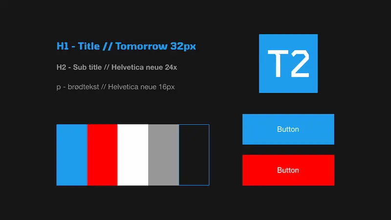

Design
Based on the findings from the desk research, which included an analysis of design solutions from Apple, Samsung, and Microsoft, a simple and cohesive color palette was developed consisting of dark gray, gray, light blue, white, and red.
Guided by value words such as “cool,” “tech,” and “clean,” a dark mode–inspired design was chosen, in which blue functions as the primary accent color and red is used for hover interactions.
Typographically, the font “Tomorrow” was selected for headings to support a sharp and technological expression, while “Helvetica Neue” is used for body text to ensure a clean layout and good readability.